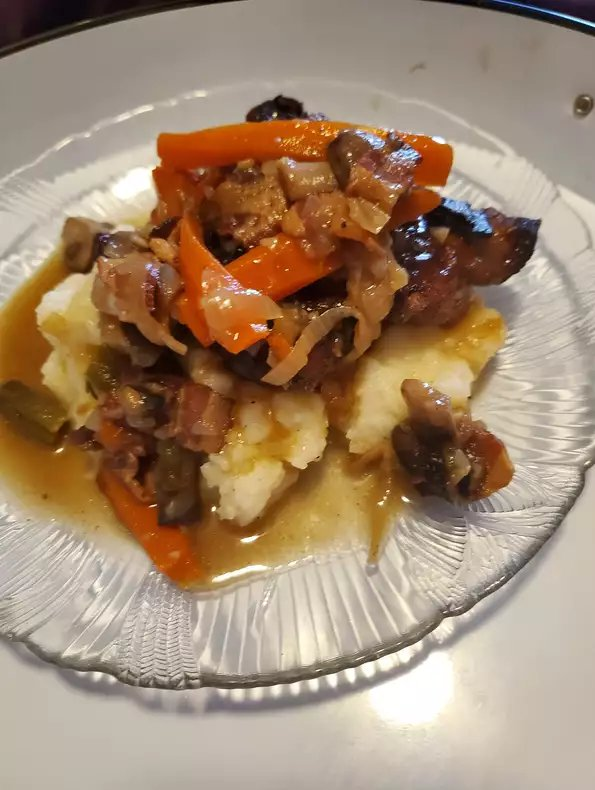

Chef John's Coq Au Vin Recipe

A delicious dinner
Coq Au Vin is a delicious recipe made famous by Julia Child.
Chef John says, "I like to use bone-in, skin-on chicken thighs instead of an old rooster for my coq au vin.
Like all braised dishes, tougher cuts with lots of connective tissue work best,
and on a chicken that would be the thigh/leg section.
Of course, someone will ask if they can use chicken breasts; please don't.
They just will not add that sticky goodness to the braising liquid that the thighs will. "
Ingredients
- 6 bone-in, skin-on chicken thighs
- 1 pinch kosher salt and freshly ground black pepper to taste
- 8 ounces bacon, sliced crosswide into 1/2-inch pieces
- 10 large button mushrooms, quartered
- 1/2 large yellow onion, diced
- 2 shallots, diced
- 2 teaspoons all-purpose flour
- 2 teaspoons butter
- 1 1/2 cups red wine
- 6 sprigs thyme
- 1 cup chicken broth
Directions
- Preheat oven to 375 degrees F (190 degrees C).
- Season chicken thighs all over with salt and pepper.
- Place bacon in a large, oven-proof skillet and cook over medium-high heat, turning occasionally, until evenly browned, about 10 minutes. Transfer bacon with a slotted spoon to a paper-towel lined plate, leaving drippings in the skillet.
- Increase heat to high and place chicken, skin-side down, into skillet. Cook in hot skillet until browned, 2 to 4 minutes per side. Transfer chicken to a plate; drain and discard all but 1 tablespoon drippings from the skillet.
- Lower heat to medium-high; saute mushrooms, onion, and shallots with a pinch of salt in the hot skillet until golden and caramelized, 7 to 12 minutes.
- Stir flour and butter into vegetable mixture until completely incorporated, about 1 minute.
- Pour red wine into the skillet and bring to a boil while scraping browned bits of food off of the bottom of the pan with a wooden spoon. Stir bacon and thyme into red wine mixture; simmer until wine is about 1/3 reduced, 3 to 5 minutes. Pour chicken broth into wine mixture and set chicken thighs into skillet; bring wine and stock to a simmer.
- Cook chicken in the preheated oven for 30 minutes. Spoon pan juices over the chicken and continue cooking until no longer pink at the bone and the juices run clear, about 30 minutes more. An instant-read thermometer inserted into the thickest part of the thigh, near the bone should read 165 degrees F (74 degrees C). Transfer chicken to a platter.
- Place skillet over high heat and reduce pan juices, skimming fat off the top as necessary, until sauce thickens slightly, about 5 minutes. Season with salt and pepper; remove and discard thyme. Pour sauce over chicken.